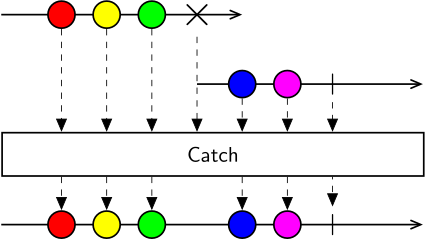

Class Catch
Represents an operator that continues an observable sequence that is terminated by an exception with the next observable sequence.

The Catch operator allows you to handle error notifications from a sequence by combining the output of multiple fallback sequences of the same type into a single sequence. Catch subscribes to the next sequence when the previous sequence produces an error, and emits all the values from that sequence until successful termination. If that sequence also terminates exceptionally, Catch then subscribes to the next sequence, and so forth. Each sequence is guaranteed to only start after the previous one terminates.
The resulting sequence will terminate successfully when any of the source sequences has terminated successfully, or exceptionally when all sequences have terminated with an error.
[Combinator]
public class Catch- Inheritance
-
Catch
- Inherited Members
Methods
Process<TSource>(IObservable<TSource>, IObservable<TSource>)
Continues an observable sequence that is terminated by an exception with the next observable sequence.
public IObservable<TSource> Process<TSource>(IObservable<TSource> first, IObservable<TSource> second)Parameters
firstIObservable<TSource>The first observable sequence whose exception (if any) is caught.
secondIObservable<TSource>The second observable sequence used to produce results when the first sequence terminates exceptionally.
Returns
- IObservable<TSource>
An observable sequence containing the elements of the first sequence, followed by the elements of the second sequence in case an exception occurred.
Type Parameters
TSourceThe type of the elements in the source and handler sequences.
Process<TSource>(params IObservable<TSource>[])
Continues an observable sequence that is terminated by an exception with the next observable sequence.
public IObservable<TSource> Process<TSource>(params IObservable<TSource>[] sources)Parameters
sourcesIObservable<TSource>[]The observable sequences to catch exceptions for.
Returns
- IObservable<TSource>
An observable sequence containing elements from consecutive source sequences until a source sequence terminates successfully.
Type Parameters
TSourceThe type of the elements in all the source sequences.